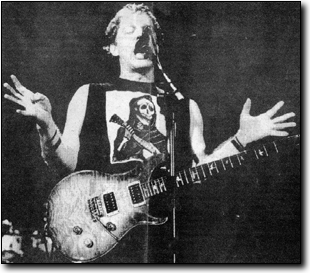

Elfman leads crowd through hits during band's last concert
by: Michael Nazarinia
Daily Bruin, 1993

Playing the second of four sold out shows at the Universal Amphitheater on Saturday, Oingo Boingo proved why they deserved to be called the best KROQ band of the '80s. On a night where "Dia de los muertos" was the theme, as it has been on so many Halloweens past. Oingo Boingo launched into a show for the ages. With an extraordinary 17-year run as a band that etched its music into Southern California's collective consciousness. Oingo Boingo displayed exactly what makes them so popular. The 3-1/2 hour show highlighted the strongest moments of the bands formidable catalog of off- kilter pop songs. Led by singer Danny Elfman and drummer Johnny "Vatos" Hernandez, bassist John Avila and guitarist Steve Bartek, as well as the reunited horn section. Oingo Boingo played each song with the manic intensity of a band possessed. The most memorable hits, such as "Little Girls" and "Gratitude" were interspersed with older, lesser known material, as well as new songs that are to be included on an upcoming love album and video concert. The night started off with a cartoon video clip that led to the furiously rhythmic "Insanity" off the last album simply titled "Boingo." Classics like "Stay" and a cover of "I am the Walrus" had the ghoulishly dressed fans singing along at the top of their lungs. Elfman's voice was good, if not better than it has ever been, and Hernandez's perfectly machine like drumming made it apparent that Oingo Boingo had reached the pinnacle of their career on this night. Oingo Boingo intertwined their strongest material with newer songs in a way that kept the energy level high throughout the night. With an effortless stage presence, Oingo Boingo played each song in a way that could only be described as easy as a walk in the park. Instead of playing their lesser known material and new songs first and building to climactic heights at the end of the show, the interweaving of material left plenty of room for surprises. Throughout the night Elfman played the part of the fairy tale telling host that led his followers on a journey through Oingo Boingo's soul. Though Elfman is leaving to pursue a more lucrative composing and directing career in film, whenever seemed bored of playing with the band. Clearly caught up in the nostalgia of the evening, Elfman repeatedly thanked the crowd for its many years of support. Finishing their first set with a blazing version of everyone's favorite "Dead Man's Party" to a backdrop of computer-animated skeletons posing as the band, they left the stage to an ear- piercing standing ovation. After a brief exit, Oingo Boingo returned with the sing-along "No Spill Blood" that reached a new definition of loud.
Leaving for another momentary break, Oingo Boingo returned and put the icing on the cake with perhaps the most fast and furious version of "Only a Lad" ever heard. Long known for its amazing Halloween shows that are the best example of what "fun" is all about, the members of Oingo Boingo individually took a bow and left the stage, departing with nothing left unsaid, and remaining as youthful as ever.